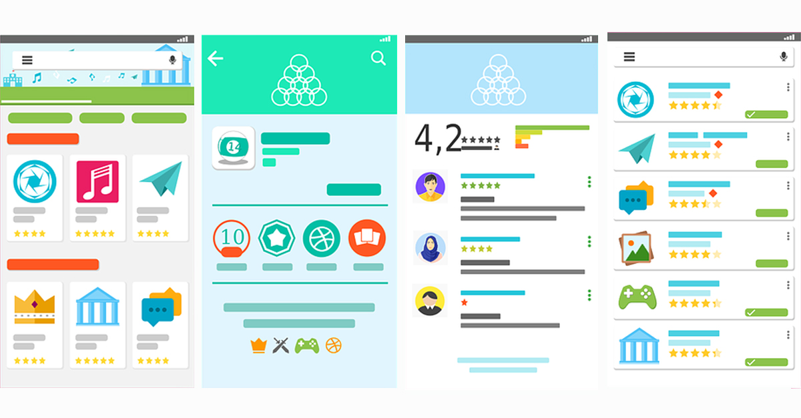
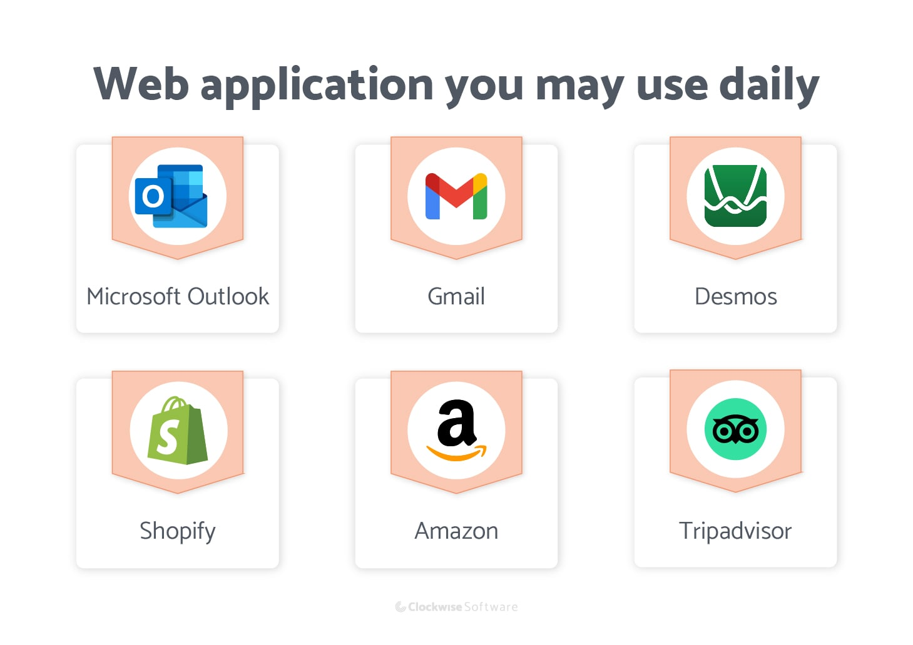

¿Qué son las aplicaciones web?
Una aplicación web es un programa informático que utiliza un navegador web para realizar una función determinada. También se denomina aplicación web. Las aplicaciones web están presentes en muchos sitios web. Un ejemplo simple es un formulario de contacto en un sitio web.
| # | Acerca | Definición | Imagen |
|---|---|---|---|
| 1 | Beneficios de las aplicaciones web |
|
 |
| 2 | ¿Como funcionan las aplicaciones web? | Todo lo que necesita para acceder a una aplicación web es una conexión a Internet. Utiliza un navegador web como Safari, Mozilla Firefox o Google Chrome para conectarse a su aplicación. Hay tres elementos que la aplicación web requiere para funcionar: un servidor web para manejar las solicitudes del cliente, un servidor de aplicaciones para ejecutar las tareas solicitadas y una base de datos para almacenar la información. |  |
| 3 | Ejemplos | Los ejemplos de aplicaciones web incluyen correo web, procesadores de texto y hojas de cálculo. La edición de videos y fotos, la conversión de archivos y el escaneo de archivos también son aplicaciones. Hay programas de correo electrónico populares como Yahoo y Gmail, y los servicios de mensajería instantánea también son aplicaciones web. |  |
Aprende más de acerca de las aplicaciones web
Presiona el siguiente link
Presionalo, es 100% real no fake
Link